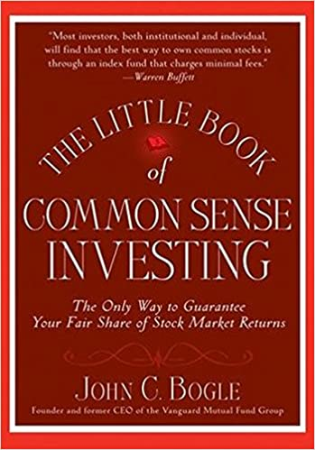

The Little Book OF Common Sense Investing
Don't look for the needle in the haystack. Just buy the haystack. - John C. "Jack" Bogle
Actively managed funds suck, because past profits don’t guarantee future success.
It’s the same game, every single year. Come December, there’ll be a new, smiling face on the front of every finance magazine. Number one fund manager, analyst of the year, bla bla bla. Then, many people invest in that guy’s fund – and lose it all.
Just because a fund manager has a phenomenal year does not mean he can just repeat the same thing the next year.
The stock market changes so fast that the systems that worked in 1990 didn’t even work in 1991, let alone 2016. Every year what works changes completely. Of all the 355 mutual funds existing in 1970, only 34 are left today. But even those can’t guarantee you’ll get your money’s worth. After all, their managers are about to retire if they’ve been around that long.
So chances are most actively managed funds go down the tubes sooner or later. But what to do instead?
Put the majority of your money in safe, low-cost index funds.
If actively managing money sucks, what should you invest in then? How about something that’s not managed at all?
Instead of paying excessive fees to watch your fund manager do a poor job and get less than the average market return, index funds are a great alternative.
They’re Jack Bogle’s gift to the world and work like this: An index fund that mimics what the Dow Jones does, has the exact same composition as the Dow Jones, just in fewer quantities. For example if 2% of the shares in the Dow Jones are Apple stocks, then 2% of the stocks in the index fund will also be Apple stocks. They’re only updated when the index that they model changes in composition, and are therefore a passive way of investing.
Because there’s no management, there are almost no fees (usually less than 1% per year) and since they model the overall index, returns grow slowly, but steadily, because they’re not affected by the volatility of the buy-low-sell-high-game most fund managers are playing.
But which of the 500+ index funds should you choose?
Choose the cheapest fund to keep things simple.
Since all index funds work according to the same principles and promise returns similar to the overall stock market (which averages 8% a year), your best bet is the cheapest index fund that’s available to you.
The only downside to letting an index fund ride out long-term is the accumulation of fees. Therefore, the higher the percentage of profits is that you have to pay each year, the less you’ll end up getting.
There are funds like the Fidelity Spartan Index fund, with 0.007% annual expenses, and J.P. Morgan’s index fund with 0.53% in annual fees. Over the long run, even those pennies add up.
Since index fund companies’ expenses don’t correlate with their returns, you can safely pick the fund with the cheapest cost structure, that’s available to you and be done with it.